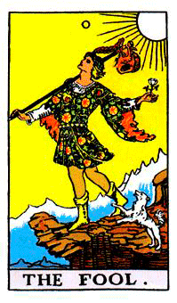

Tarot, Reiki y Astrología
La astrología es el estudio de la relación que existe entre la energía que desprenden desde su posición y los movimientos que ejercen en el sistema solar los planetas y luminarias y su influencia sobre los cuerpos humanos. Basádonos en que todos los cuerpos desprenden energía, aún si esos cuerpos, denominados planetas y luminarias, están lejos de nosotros, tienen de alguna manera cierta influencia, dejándonos una forma de trabajo interno para poder desarrollar cualidades y/o habilidades en el transcurso de nuestra existencia.
La imposición de manos para el paso de energía de un cuerpo a otro data de muchísimos millones de años atrás. En una época donde se trataba de mantener el equilibrio entre los seres que habitaban este planeta, una de las posibilidades que tenían para mantenerlo era la imposición de manos y la transmisión de energía a través de las mismas, de un cuerpo a otro. Era muy avanzado para la época, ya que la forma de energía era sencilla para ser trasladada de un cuerpo a otro y no había mucho desarrollo de lo que hoy es conocido como "ego", ni tampoco de la personalidad. Hoy en día, una técnica fue redescubierta por Mikao Usui en 1922, con la autoimposición de manos para pasarse energía y mantener su organismo sano. La forma más tradicional que conocemos es el sistema Usui japonés. Esa línea tradicionalista ha ayudado a mucha gente a mantenerse en un estado psicofísico espiritualmente más elevado del que tendrían si no se les hubiera pasado energía a través del Reiki. Una sesión de reiki dura unos 40 minutos aproximadamente y equivale a 3 horas de descanso profundo. Esto no quiere decir que las sesiones de Reiki reemplacen al sueño, sino que nos ayudan a mantenernos en buen estado.
"Rei" es energía universal y "Ki" es energía vital. La unión de las mismas se utiliza como técnica de canalización de la energía a través de la imposición de manos. Dicha canalización se utiliza para obtener equilibrio y armonía a nivel psicofísico y espiritual.
El tarot es una baraja de naipes usada con el fin de guiarnos a los seres humanos en la interpretación de hechos pasados, presentes y futuros.
